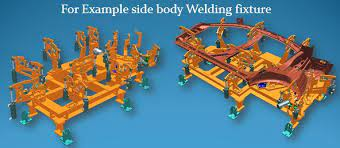

@automation1234
@automation1234
Robotic Welding Fixture:
For the robotic welding to be carried out efficiently, a good fixture is required to hold the component in position in the automated system.
The first step in designing a fixture material is selecting the proper fixture base metal. You can choose between the common base materials like mild steel, high carbon steel, aluminium, copper and stainless steel etc. Various alloys can be included to improve work hardening and wear resistance properties. These fixtures are custom built according to the welding process and as per the requirements of the customers.
Welding fixture lines are used in robotic welding to improve the efficiency and workflow of the automated process. These lines are flexible and can be modified according to the operations at the customer’s will.
sed.

- Walking is a great one Exercise for beginners, as it can be done anywhere, does not require equipment and puts minimal stress on your joints. Try to include more walks in your daily routine.
- Walking for 30 minutes a day or more on most days of the week is a great way to improve or maintain your overall health.
-You carry your own body weight when you walk. This is known as weight-bearing exercise. Some of the benefits include:
1. increased cardiovascular and pulmonary fitness.
2. reduced risk of heart disease and stroke
3. reduced body fat.
4. stronger bones and improved balance
In critical applications where the components should be leak-proof, welding is the only option to manufacture. Making a good quality weld depends on the skill of the operator, quality of materials and consistency of the workflow. In manual welding which is done by a human, factors like human error, variability in quality due to fatigue, inaccuracy etc are to be considered.
Positional repeatability cannot be obtained in manual welding. Also, after-welding processes like clean up, removal of spatter etc are to be done in manual welding which consumes time and effort decreasing productivity and increasing the costs. This issue is overcome by the introduction of robotic welding.

In robotic welding, the post-weld cleanup and spatter removal are greatly reduced, decreasing the downtime between the projects. Welding of inaccessible areas of a component, dangerous parts that may be risky to the operator’s life can be done efficiently in less time by robotic welding.